DE analysis using a topic model: evaluation using simulated data
Peter Carbonetto
Last updated: 2021-11-20
Checks: 5 2
Knit directory: single-cell-topics/analysis/
This reproducible R Markdown analysis was created with workflowr (version 1.6.2). The Checks tab describes the reproducibility checks that were applied when the results were created. The Past versions tab lists the development history.
The R Markdown file has unstaged changes. To know which version of the R Markdown file created these results, you’ll want to first commit it to the Git repo. If you’re still working on the analysis, you can ignore this warning. When you’re finished, you can run wflow_publish to commit the R Markdown file and build the HTML.
Great job! The global environment was empty. Objects defined in the global environment can affect the analysis in your R Markdown file in unknown ways. For reproduciblity it’s best to always run the code in an empty environment.
The command set.seed(1) was run prior to running the code in the R Markdown file. Setting a seed ensures that any results that rely on randomness, e.g. subsampling or permutations, are reproducible.
Great job! Recording the operating system, R version, and package versions is critical for reproducibility.
- assess-monte-carlo-3
- de-noshrink
- de-with-ash
- fit-poisson-nmf
To ensure reproducibility of the results, delete the cache directory de_analysis_detailed_look_cache and re-run the analysis. To have workflowr automatically delete the cache directory prior to building the file, set delete_cache = TRUE when running wflow_build() or wflow_publish().
Great job! Using relative paths to the files within your workflowr project makes it easier to run your code on other machines.
Great! You are using Git for version control. Tracking code development and connecting the code version to the results is critical for reproducibility.
The results in this page were generated with repository version 709c3d3. See the Past versions tab to see a history of the changes made to the R Markdown and HTML files.
Note that you need to be careful to ensure that all relevant files for the analysis have been committed to Git prior to generating the results (you can use wflow_publish or wflow_git_commit). workflowr only checks the R Markdown file, but you know if there are other scripts or data files that it depends on. Below is the status of the Git repository when the results were generated:
Ignored files:
Ignored: data/droplet.RData
Ignored: data/pbmc_68k.RData
Ignored: data/pbmc_purified.RData
Ignored: data/pulseseq.RData
Ignored: output/droplet/diff-count-droplet.RData
Ignored: output/droplet/fits-droplet.RData
Ignored: output/droplet/rds/
Ignored: output/pbmc-68k/fits-pbmc-68k.RData
Ignored: output/pbmc-68k/rds/
Ignored: output/pbmc-purified/fits-pbmc-purified.RData
Ignored: output/pbmc-purified/rds/
Ignored: output/pulseseq/diff-count-pulseseq.RData
Ignored: output/pulseseq/fits-pulseseq.RData
Ignored: output/pulseseq/rds/
Untracked files:
Untracked: analysis/de_analysis_detailed_look_cache/
Untracked: analysis/de_analysis_detailed_look_more_cache/
Untracked: plots/
Unstaged changes:
Modified: analysis/de_analysis_detailed_look.Rmd
Note that any generated files, e.g. HTML, png, CSS, etc., are not included in this status report because it is ok for generated content to have uncommitted changes.
These are the previous versions of the repository in which changes were made to the R Markdown (analysis/de_analysis_detailed_look.Rmd) and HTML (docs/de_analysis_detailed_look.html) files. If you’ve configured a remote Git repository (see ?wflow_git_remote), click on the hyperlinks in the table below to view the files as they were in that past version.
| File | Version | Author | Date | Message |
|---|---|---|---|---|
| html | 726aa32 | Peter Carbonetto | 2021-11-10 | Revised the new plots in de_analysis_detailed_look comparing with MAST. |
| Rmd | 34217d5 | Peter Carbonetto | 2021-11-10 | workflowr::wflow_publish(“de_analysis_detailed_look.Rmd”, verbose = TRUE) |
| html | c0bc161 | Peter Carbonetto | 2021-11-10 | Added MAST results to de_analysis_detailed_look analysis. |
| Rmd | 4dd44af | Peter Carbonetto | 2021-11-10 | workflowr::wflow_publish(“de_analysis_detailed_look.Rmd”, verbose = TRUE) |
| html | e8fca35 | Peter Carbonetto | 2021-11-10 | Fixed power vs. fdr plots in de_analysis_detailed_look analysis. |
| Rmd | 0818502 | Peter Carbonetto | 2021-11-10 | workflowr::wflow_publish(“de_analysis_detailed_look.Rmd”, verbose = TRUE) |
| Rmd | caa13f1 | Peter Carbonetto | 2021-11-08 | Still working on DE analysis scripts. |
| html | 043e480 | Peter Carbonetto | 2021-10-26 | Fixed ROC curves in de_analysis_detailed_look analysis. |
| Rmd | bd52791 | Peter Carbonetto | 2021-10-26 | workflowr::wflow_publish(“de_analysis_detailed_look.Rmd”, verbose = TRUE) |
| html | 803d463 | Peter Carbonetto | 2021-10-26 | Made a few small revisions to the de_analysis_detailed_look analysis. |
| Rmd | 473b085 | Peter Carbonetto | 2021-10-26 | workflowr::wflow_publish(“de_analysis_detailed_look.Rmd”, verbose = TRUE) |
| html | b7503ca | Peter Carbonetto | 2021-10-26 | Added ROC curves to the de_analysis_detailed_look analysis, and made |
| Rmd | caa2300 | Peter Carbonetto | 2021-10-26 | workflowr::wflow_publish(“de_analysis_detailed_look.Rmd”, verbose = TRUE) |
| Rmd | f617362 | Peter Carbonetto | 2021-10-26 | Revised text accompanying power vs. fdr plot in de_analysis_detailed_look analysis. |
| Rmd | 01ba989 | Peter Carbonetto | 2021-10-26 | Revised the KL density plot and first fdr-vs-power curve in the analysis/de_analysis_detailed_look analysis. |
| Rmd | 2b5780a | Peter Carbonetto | 2021-10-25 | Made some improvements to the detailed DE investigations. |
| Rmd | fc5c27a | Peter Carbonetto | 2021-10-25 | Added initial code for ROC plot. |
| html | 297d0d1 | Peter Carbonetto | 2021-10-20 | Fixed link in de_analysis_detailed_look page. |
| Rmd | 53da33b | Peter Carbonetto | 2021-10-20 | workflowr::wflow_publish(“de_analysis_detailed_look.Rmd”) |
| Rmd | bd91aec | Peter Carbonetto | 2021-10-20 | Fixed small typo in text. |
| html | fe1290c | Peter Carbonetto | 2021-10-20 | Revised accompanying text in de_analysis_detailed_look analysis. |
| html | 71a19ef | Peter Carbonetto | 2021-10-20 | Revised accompanying text in de_analysis_detailed_look analysis. |
| Rmd | 32d5479 | Peter Carbonetto | 2021-10-20 | workflowr::wflow_publish(“de_analysis_detailed_look.Rmd”) |
| Rmd | d9557e4 | Peter Carbonetto | 2021-10-19 | Fixed typo. |
| html | 6a25fa8 | Peter Carbonetto | 2021-10-19 | Added more detailed analysis of Monte Carlo estimates to |
| Rmd | 825dad0 | Peter Carbonetto | 2021-10-19 | workflowr::wflow_publish(“de_analysis_detailed_look.Rmd”, verbose = TRUE) |
| html | 7682717 | Peter Carbonetto | 2021-10-19 | Build site. |
| Rmd | 63c16ca | Peter Carbonetto | 2021-10-19 | workflowr::wflow_publish(“de_analysis_detailed_look.Rmd”, verbose = TRUE) |
| html | 67b97a8 | Peter Carbonetto | 2021-10-19 | Re-built de_analysis_detailed_look with fastTopics 0.6.74. |
| Rmd | 633212a | Peter Carbonetto | 2021-10-19 | workflowr::wflow_publish(“de_analysis_detailed_look.Rmd”, verbose = TRUE) |
| html | 90e1352 | Peter Carbonetto | 2021-10-18 | Added summary to top of de_analysis_detailed_look analysis. |
| Rmd | ff01162 | Peter Carbonetto | 2021-10-18 | workflowr::wflow_publish(“de_analysis_detailed_look.Rmd”) |
| Rmd | 67e137e | Peter Carbonetto | 2021-10-18 | Renamed de_eval_functions.R. |
| html | c483c15 | Peter Carbonetto | 2021-10-15 | A few refinements to the de_analysis_detailed_look analysis. |
| Rmd | 35cee4e | Peter Carbonetto | 2021-10-15 | workflowr::wflow_publish(“de_analysis_detailed_look.Rmd”, verbose = TRUE) |
| html | 25798e0 | Peter Carbonetto | 2021-10-15 | Added plots comparing deseq2 vs fastTopics in de_analysis_detailed_look. |
| Rmd | 1a55a9b | Peter Carbonetto | 2021-10-15 | workflowr::wflow_publish(“de_analysis_detailed_look.Rmd”, verbose = TRUE) |
| Rmd | 365563f | Peter Carbonetto | 2021-10-15 | Working on comparison with DESeq2 in de_analysis_detailed_look.Rmd. |
| html | 365563f | Peter Carbonetto | 2021-10-15 | Working on comparison with DESeq2 in de_analysis_detailed_look.Rmd. |
| Rmd | 2e9deef | Peter Carbonetto | 2021-10-15 | Made a few small improvements to the de_analysis_detailed_look analysis; mostly revised the accompanying text. |
| html | 090a487 | Peter Carbonetto | 2021-10-15 | Rebuilt de_analysis_detailed_look with a new version of fastTopics |
| Rmd | afaa55d | Peter Carbonetto | 2021-10-15 | workflowr::wflow_publish(“de_analysis_detailed_look.Rmd”) |
| Rmd | 13d2f7d | Peter Carbonetto | 2021-10-14 | Added pvalue/lfsr histograms for deseq2 and fastTopics. |
| Rmd | 09089ff | Peter Carbonetto | 2021-10-14 | Revising de_analysis_detailed_look after fixing z-score calculations in de_analysis. |
| html | f61da64 | Peter Carbonetto | 2021-10-14 | Fixed a bug in the power vs fdr plot in de_analysis_detailed_look. |
| Rmd | cb60f4c | Peter Carbonetto | 2021-10-14 | workflowr::wflow_publish(“de_analysis_detailed_look.Rmd”) |
| html | 3d62d9e | Peter Carbonetto | 2021-10-14 | Revised plots and explanatory text in de_analysis_detailed_look. |
| Rmd | 5d5c6a6 | Peter Carbonetto | 2021-10-14 | workflowr::wflow_publish(“de_analysis_detailed_look.Rmd”) |
| html | 468f4d9 | Peter Carbonetto | 2021-10-13 | Added draft plots to de_analysis_detailed_look investigation. |
| Rmd | eceb899 | Peter Carbonetto | 2021-10-13 | workflowr::wflow_publish(“de_analysis_detailed_look.Rmd”, verbose = TRUE) |
| html | 7236187 | Peter Carbonetto | 2021-10-13 | Revised the data simulation and added some “shrink vs. noshrink” plots |
| Rmd | 6d63993 | Peter Carbonetto | 2021-10-13 | Made another simplification to simulate_twotopic_umi_data and added plots to de_analysis_detailed_look analysis comparing results with and without shrinkage. |
| Rmd | 157f7d3 | Peter Carbonetto | 2021-10-12 | Working on improved script driving_genes_better.R. |
| html | af856a2 | Peter Carbonetto | 2021-10-12 | Fixed the plots showing properties of the simulated data in the |
| Rmd | 2726a86 | Peter Carbonetto | 2021-10-12 | workflowr::wflow_publish(“de_analysis_detailed_look.Rmd”) |
| html | b8eadee | Peter Carbonetto | 2021-10-11 | Added some basic histograms to the de_analysis_detailed_look analysis. |
| Rmd | e2577f1 | Peter Carbonetto | 2021-10-11 | Working on the data simulation step in the de_analysis_detailed_look |
| html | cd17ccf | Peter Carbonetto | 2021-10-09 | Initial build of the de_analysis_detailed_look workflowr page. |
| Rmd | b8e1fe8 | Peter Carbonetto | 2021-10-09 | workflowr::wflow_publish(“de_analysis_detailed_look.Rmd”) |
| Rmd | 888ea7d | Peter Carbonetto | 2021-10-08 | I have an initial implementation of function simulate_twotopic_scrnaseq_data used to evaluate the de_analysis methods in fastTopics. |
Here we evaluate the new topic-model-based DE methods implemented in the fastTopics package using simulated data. We show the benefits of shrinking the estimates using adaptive shrinkage and quantifying uncertainty. We also compare with DESeq2 and show that the results are very similar when the cells separate into distinct clusters. In this first analysis, we focus on the case of \(K = 2\) topics, and in the second analysis we evaluate the new DE methods with more than two topics.
Load the packages used in the analysis below, and some additional functions for simulating the data.
library(Matrix)
library(scran)
library(DESeq2)
library(Seurat)
library(MAST)
library(fastTopics)
library(ggplot2)
library(cowplot)
source("../code/de_analysis_functions.R")Simulate UMI counts
We begin by simulating counts from a rank-2 Poisson NMF model with parameters chosen to roughly mimic the UMI counts from a single-cell RNA sequencing experiment. For now, we focus our attention on the rank-2 (i.e., two topics) case to simplify the evaluation of the DE methods; comparing gene expression between three or topics brings some additional complications which aren’t necessary for assessing basic properties of the new DE methods. For more details on how the data are simulated, see function simulate_twotopic_umi_data.
set.seed(1)
dat <- simulate_twotopic_umi_data()
X <- dat$X
F <- dat$F
L <- dat$LBefore fitting a topic model and running a DE analysis, we first inspect some basic properties of the simulated data.
The sample sizes (total counts for each cell) are roughly normal on the (base-10) log scale:
s <- rowSums(X)
ggplot(data.frame(s = log10(s)),aes(x = s)) +
geom_histogram(color = "white",fill = "black",bins = 32) +
labs(x = "log10 size",y = "cells") +
theme_cowplot()
The expression rates were simulated so that they are normally distributed on the log scale:
ggplot(data.frame(f = as.vector(F)),aes(x = log10(f))) +
geom_histogram(color = "white",fill = "black",bins = 32) +
labs(x = "log10 expression rate",y = "genes") +
theme_cowplot()
About half of the genes have nonzero differences in expression between the two topics. Among the nonzero gene expression differences, the log-fold changes (LFCs) were simulated from the normal distribution:
nonzero_lfc <- abs(F[,1] - F[,2]) > 1e-8
lfc <- log2(F[,2]/F[,1])
ggplot(data.frame(lfc = lfc[nonzero_lfc]),aes(x = lfc)) +
geom_histogram(color = "white",fill = "black",bins = 32) +
labs(x = "LFC",y = "genes") +
theme_cowplot()
mean(nonzero_lfc)
# [1] 0.496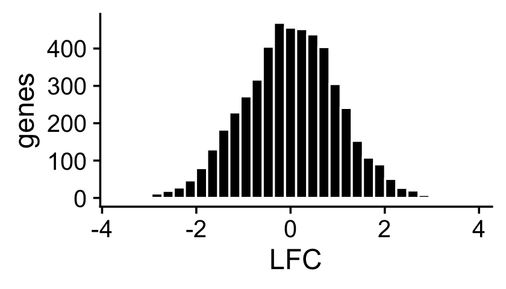
Fit multinomial topic model to UMI counts
Now we fit a multinomial topic model to the simulated UMI count data. To simplify evaluation, we assume that the topic proportions are known, and fix them to their ground-truth values. In this way, the only error that can arise is in the estimates of the expression rates \(f_{ij}\).
fit0 <- init_poisson_nmf(X,F = dat$F,L = with(dat,s*L))
fit <- fit_poisson_nmf(X,fit0 = fit0,numiter = 40,method = "scd",
update.loadings = NULL,verbose = "none")
fit <- poisson2multinom(fit)
summary(fit)
# Model overview:
# Number of data rows, n: 200
# Number of data cols, m: 10000
# Rank/number of topics, k: 2
# Evaluation of model fit (40 updates performed):
# Poisson NMF log-likelihood: -7.169037374429e+05
# Multinomial topic model log-likelihood: -7.158926302076e+05
# Poisson NMF deviance: +8.564731575439e+05
# Max KKT residual: +4.123695e-06
Warning: The above code chunk cached its results, but it won’t be re-run if previous chunks it depends on are updated. If you need to use caching, it is highly recommended to also set knitr::opts_chunk$set(autodep = TRUE) at the top of the file (in a chunk that is not cached). Alternatively, you can customize the option dependson for each individual chunk that is cached. Using either autodep or dependson will remove this warning. See the knitr cache options for more details.
DE analysis with and without shrinkage
We perform a DE analysis without shrinking the LFC estimates,
set.seed(1)
de.noshrink <- de_analysis(fit,X,shrink.method = "none",
control = list(ns = 10000,nc = 2))
# Fitting 10000 Poisson models with k=2 using method="scd".
# Computing log-fold change statistics from 10000 Poisson models with k=2.
Warning: The above code chunk cached its results, but it won’t be re-run if previous chunks it depends on are updated. If you need to use caching, it is highly recommended to also set knitr::opts_chunk$set(autodep = TRUE) at the top of the file (in a chunk that is not cached). Alternatively, you can customize the option dependson for each individual chunk that is cached. Using either autodep or dependson will remove this warning. See the knitr cache options for more details.
and we perform a second DE analysis using adaptive shrinkage to shrink (and hopefully improve accuracy of) the LFC estimates,
set.seed(1)
de <- de_analysis(fit,X,shrink.method = "ash",control = list(ns = 1e4,nc = 2))
# Fitting 10000 Poisson models with k=2 using method="scd".
# Computing log-fold change statistics from 10000 Poisson models with k=2.
# Stabilizing posterior log-fold change estimates using adaptive shrinkage.
Warning: The above code chunk cached its results, but it won’t be re-run if previous chunks it depends on are updated. If you need to use caching, it is highly recommended to also set knitr::opts_chunk$set(autodep = TRUE) at the top of the file (in a chunk that is not cached). Alternatively, you can customize the option dependson for each individual chunk that is cached. Using either autodep or dependson will remove this warning. See the knitr cache options for more details.
This next scatterplot compares the posterior mean LFC estimates with and without performing the shrinkage step. As expected, the smaller (in magnitude) LFC estimates and the LFC estimates corresponding to genes with lower expression tend to be more strongly shrunk toward zero.
pdat <- data.frame(noshrink = de.noshrink$postmean[,2],
shrink = de$postmean[,2],
log10mean = log10(de$f0))
ggplot(pdat,aes(x = noshrink,y = shrink,fill = log10mean)) +
geom_point(shape = 21,color = "white",size = 2) +
geom_abline(intercept = 0,slope = 1,color = "black",linetype = "dotted") +
scale_fill_gradient2(low = "deepskyblue",mid = "gold",high = "orangered",
midpoint = -4) +
labs(x = "original LFC estimates",
y = "shrunken LFC estimates") +
theme_cowplot()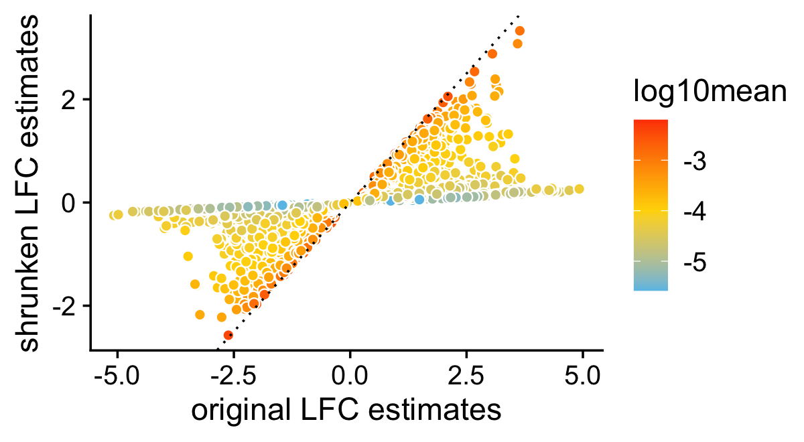
The next two bar charts show the overall impact of the shrinkage on the distribution of the z-scores; dark blue bars are for diifferentially expressed genes, and orange bars are for non-differentially expressed genes. (For better visualizataion the z-scores have been projected onto the interval \([-8,+8]\).)
pdat <- data.frame(noshrink = clamp(de.noshrink$z[,2],-8,+8),
shrink = clamp(de$z[,2],-8,+8),
de = factor(nonzero_lfc))
p1 <- ggplot(pdat,aes(x = noshrink,color = de,fill = de)) +
geom_histogram(bins = 64) +
scale_color_manual(values = c("darkorange","darkblue")) +
scale_fill_manual(values = c("darkorange","darkblue")) +
labs(x = "z-score",y = "genes",title = "without shrinkage") +
theme_cowplot()
p2 <- ggplot(pdat,aes(x = shrink,color = de,fill = de)) +
geom_histogram(bins = 64) +
scale_color_manual(values = c("darkorange","darkblue")) +
scale_fill_manual(values = c("darkorange","darkblue")) +
labs(x = "z-score",y = "genes",title = "with shrinkage") +
theme_cowplot()
print(plot_grid(p1,p2))
And the next two bar charts show the overall impact of the shrinkage on the p-values.
pdat <- data.frame(noshrink = 10^(-de.noshrink$lpval[,2]),
shrink = 10^(-de$lpval[,2]),
de = factor(nonzero_lfc))
p1 <- ggplot(pdat,aes(x = noshrink,color = de,fill = de)) +
geom_histogram(bins = 64) +
scale_color_manual(values = c("darkorange","darkblue")) +
scale_fill_manual(values = c("darkorange","darkblue")) +
labs(x = "p-value",y = "genes",title = "without shrinkage") +
theme_cowplot()
p2 <- ggplot(pdat,aes(x = shrink,color = de,fill = de)) +
geom_histogram(bins = 64) +
scale_color_manual(values = c("darkorange","darkblue")) +
scale_fill_manual(values = c("darkorange","darkblue")) +
labs(x = "p-value",y = "genes",title = "with shrinkage") +
theme_cowplot()
print(plot_grid(p1,p2))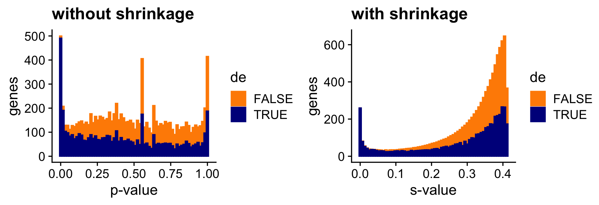
Both the z-score and p-value plots show that the adaptive shrinkage step more strongly encourages the LFC estimates for the non-DE genes toward zero.
Quantifying uncertainty in the LFC estimates
Above, we assessed the usefulness of applying the adaptive shrinkage method to improve the accuracy of the LFC estimates. This idea of shrinking the LFC estimates is not new, and is already implemented in DESeq2 (also using adaptive shrinkage).
A more important aspect of the DE analysis methods in fastTopics is that the methods also quantify uncertainty in the LFC estimates by computing posterior HPD intervals. To see why this is important, consider this plot comparing the MLEs of the LFCs against the shrunken posterior mean estimates of the LFCs. What is striking is that even very large (in magnitude) point estimates are sometimes shrunk to zero; this happens because although the MLEs can be far from zero, the HPD intervals are also very large.
pdat <- data.frame(est = de$est[,2],
shrink = de$postmean[,2],
log10mean = log10(de$f0))
ggplot(pdat,aes(x = est,y = shrink,fill = log10mean)) +
geom_point(shape = 21,color = "white",size = 2) +
geom_abline(intercept = 0,slope = 1,color = "black",linetype = "dotted") +
scale_fill_gradient2(low = "deepskyblue",mid = "gold",high = "orangered",
midpoint = -4) +
labs(x = "point estimates",
y = "shrunken estimates") +
theme_cowplot()
To illustrate the impact of this on the DE analysis, consider the K-L divergence measure used in Dey, Hsiao & Stephens (2017) to rank genes, a measure which doesn’t fully account for uncertainty in the LFCs. Since the K-L divergence is not a signed ranking measure like the z-score, here we focus only on genes that are estimated to have greater expression in topic 2 compared to topic 1. (For better visualization, we show the distribution of the K-L divergences on the log scale, and any z-scores larger than 4 are shown as 4.)
i <- which(fit$F[,2] - fit$F[,1] > -1e-8)
D <- fastTopics:::min_kl_poisson(fit$F)
pdat1 <- data.frame(lkl = log10(D[,2] + 1e-8),de = factor(nonzero_lfc))
pdat2 <- data.frame(z = clamp(de$z[,2],-4,+4),de = factor(nonzero_lfc))
pdat1 <- pdat1[i,]
pdat2 <- pdat2[i,]
p1 <- ggplot(pdat1,aes(x = lkl,color = de,fill = de)) +
geom_histogram(bins = 64) +
scale_color_manual(values = c("darkorange","darkblue")) +
scale_fill_manual(values = c("darkorange","darkblue")) +
labs(x = "log10 K-L divergence",y = "genes") +
theme_cowplot()
p2 <- ggplot(pdat2,aes(x = z,color = de,fill = de)) +
geom_histogram(bins = 64) +
scale_color_manual(values = c("darkorange","darkblue")) +
scale_fill_manual(values = c("darkorange","darkblue")) +
labs(x = "z-score",y = "genes") +
theme_cowplot()
print(plot_grid(p1,p2))
Without fully accounting for uncertainty, sometimes genes with very large LFCs get highly ranked by the K-L divergence measure (while also being uncertain about these estimates), whereas this happens less often for the z-scores.
To underscore the importance of accounting for uncertainty, suppose we used the KL-divergences and the p-values returned by de_analysis(shrink.method = "ash") to discover differentially expressed genes. The power vs. FDR curves show that, at low false discovery rates (say, FDR < 0.2), the rankings accounting for uncertainty in the LFC estimates (with or without shrinkage) perform much better than the ranking based on the KL divergence measure. We also see that using adaptive shrinkage produces a modest improvement. As before, to draw a fair comparison with the K-L divergence-based ranking, we focus only on genes that are estimated to have greater expression in topic 2 compared to topic 1.
pdat1 <- create_fdr_vs_power_curve(-D[i,2],nonzero_lfc[i],length.out = 140)
pdat2 <- create_fdr_vs_power_curve(-de.noshrink$lpval[i,2],nonzero_lfc[i],
length.out = 140)
pdat3 <- create_fdr_vs_power_curve(-de$lpval[i,2],nonzero_lfc[i],
length.out = 140)
pdat <- rbind(cbind(pdat1,method = "kl"),
cbind(pdat2,method = "noshrink"),
cbind(pdat3,method = "shrink"))
ggplot(pdat,aes(x = fdr,y = power,color = method)) +
geom_line(size = 0.65,orientation = "y") +
scale_color_manual(values = c("royalblue","limegreen","darkorange")) +
theme_cowplot()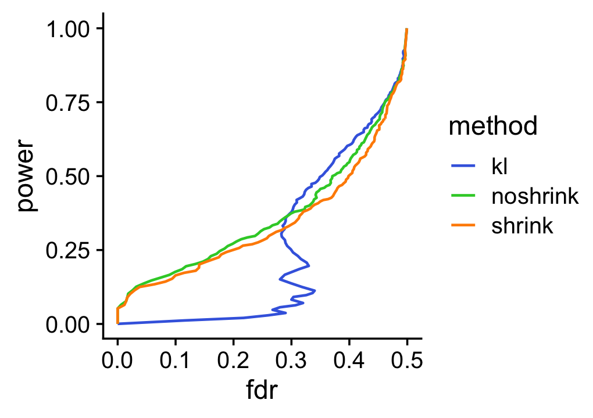
For a different perspective we also show the ROC curve comparing the true positive rate (TPR) against the false positive rate (FPR):
pdat1 <- create_roc_curve(-D[i,2],nonzero_lfc[i],length.out = 100)
pdat2 <- create_roc_curve(-de.noshrink$lpval[i,2],nonzero_lfc[i],
length.out = 100)
pdat3 <- create_roc_curve(-de$lpval[i,2],nonzero_lfc[i],length.out = 100)
pdat <- rbind(cbind(pdat1,method = "kl"),
cbind(pdat2,method = "noshrink"),
cbind(pdat3,method = "shrink"))
ggplot(pdat,aes(x = fpr,y = tpr,color = method)) +
geom_line(size = 0.65) +
geom_abline(intercept = 0,slope = 1,color = "black",linetype = "dotted") +
scale_color_manual(values = c("royalblue","limegreen","darkorange")) +
theme_cowplot()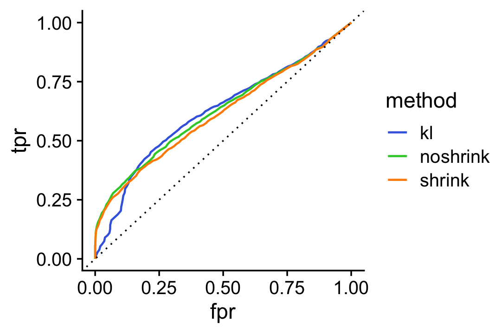
Assessing accuracy of the Monte Carlo estimates
We use a simple MCMC algorithm to estimate LFC posterior statistics. To assess accuracy of the posterior calculations, we perform the DE analysis twice, and compare the z-scores returned by the two de_analysis runs. If the z-scores are very consistent between the two runs this suggests that they are mostly accurate.
To illustrate, we first compute the posteriors using 1,000 Monte Carlo samples:
set.seed(1); de1 <- de_analysis(fit,X,control = list(ns = 1000,nc = 2))
# Using 2 RcppParallel threads.
# Using 2 threads.
set.seed(2); de2 <- de_analysis(fit,X,control = list(ns = 1000,nc = 2))
# Using 2 RcppParallel threads.
# Using 2 threads.
# Fitting 10000 Poisson models with k=2 using method="scd".
# Computing log-fold change statistics from 10000 Poisson models with k=2.
# Stabilizing posterior log-fold change estimates using adaptive shrinkage.
# Fitting 10000 Poisson models with k=2 using method="scd".
# Computing log-fold change statistics from 10000 Poisson models with k=2.
# Stabilizing posterior log-fold change estimates using adaptive shrinkage.Now we compare the z-scores estimated by these two runs in a simple scatterplot:
pdat <- data.frame(x = de1$z[,2],y = de2$z[,2])
ggplot(pdat,aes(x = x,y = y,fill = log10mean)) +
geom_point(shape = 21,color = "white",fill = "royalblue",size = 2) +
geom_abline(intercept = 0,slope = 1,color = "black",linetype = "dotted") +
labs(x = "first z-score estimate",
y = "second z-score estimate") +
theme_cowplot()
| Version | Author | Date |
|---|---|---|
| 7682717 | Peter Carbonetto | 2021-10-19 |
Here we see that the concordance is quite strong, but we should be able to improve the accuracy by running a longer Markov chain. Let’s try simulating a longer Markov chain with 10,000 iterations:
set.seed(1); de1 <- de_analysis(fit,X,control = list(ns = 10000,nc = 2))
# Using 2 RcppParallel threads.
# Using 2 threads.
set.seed(2); de2 <- de_analysis(fit,X,control = list(ns = 10000,nc = 2))
# Using 2 RcppParallel threads.
# Using 2 threads.
# Fitting 10000 Poisson models with k=2 using method="scd".
# Computing log-fold change statistics from 10000 Poisson models with k=2.
# Stabilizing posterior log-fold change estimates using adaptive shrinkage.
# Fitting 10000 Poisson models with k=2 using method="scd".
# Computing log-fold change statistics from 10000 Poisson models with k=2.
# Stabilizing posterior log-fold change estimates using adaptive shrinkage.
Warning: The above code chunk cached its results, but it won’t be re-run if previous chunks it depends on are updated. If you need to use caching, it is highly recommended to also set knitr::opts_chunk$set(autodep = TRUE) at the top of the file (in a chunk that is not cached). Alternatively, you can customize the option dependson for each individual chunk that is cached. Using either autodep or dependson will remove this warning. See the knitr cache options for more details.
Indeed, with 10,000 Monte Carlo samples the two sets of z-score estimates are now very similar:
pdat <- data.frame(x = de1$z[,2],y = de2$z[,2])
ggplot(pdat,aes(x = x,y = y,fill = log10mean)) +
geom_point(shape = 21,color = "white",fill = "royalblue",size = 2) +
geom_abline(intercept = 0,slope = 1,color = "black",linetype = "dotted") +
labs(x = "first z-score estimate",
y = "second z-score estimate") +
theme_cowplot()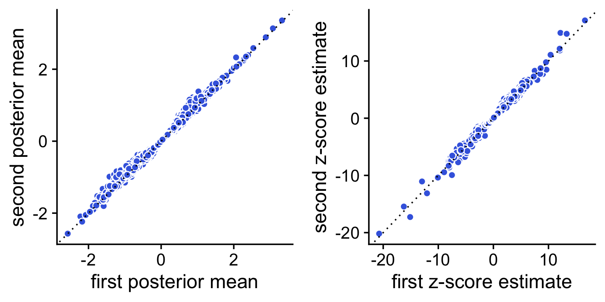
Comparison with DESeq2 and MAST
DESeq2 and MAST are leading methods for DE analysis in single-cell RNA sequencing data (they are two of the main DE analysis methods supported by Seurat). Here we apply DESeq2 and MAST to these same UMI count data. We show in particular that the fastTopics DE results are very similar to DESeq2.
Since DESeq2 and MAST assume discrete cell types or conditions, we apply DESeq2 and MAST to the subset of cells that were are almost entirely (>99%) simulated from one topic; in this simulation, approximatmely 2/3 of the cells were simulated from one topic (entirely topic 1 or entirely topic 2), and the remaining 1/3 were simulated from a mixture of the two topics (with the mixture proportion being uniformly distributed on \([0,1]\)). There may be a small loss of accuracy in the DESeq2 results since DESeq2 is using only 2/3 of the data, but overall we expect that the fastTopics DE analysis should closely replicate the DESeq2 analysis. By contast, MAST performs substantially worse than both DESeq2 and fastTopics, although has the benefit of being much faster for large single-cell data sets.
single_topic <- apply(L,1,max) > 0.99
mean(single_topic)
# [1] 0.655These next few lines of code prepare the UMI count data for analysis with DESeq2.
i <- which(single_topic)
Y <- t(X[i,])
cluster <- factor(apply(L,1,which.max))
deseq <- DESeqDataSetFromMatrix(Y,data.frame(cluster = cluster[i]),~cluster)
# converting counts to integer modeNow we perform the DE analysis using DESeq2, using the settings recommended for single-cell RNA-seq data (see the main DESeq2 vignette for details). To replicate the fastTopics analysis as closely as possible, we also shrink the LFC estimates using adaptive shrinkage.
sizeFactors(deseq) <- calculateSumFactors(Y)
deseq <- DESeq(deseq,test = "LRT",reduced=~1,useT = TRUE,minmu = 1e-6,
minReplicatesForReplace = Inf)
# using pre-existing size factors
# estimating dispersions
# gene-wise dispersion estimates
# mean-dispersion relationship
# -- note: fitType='parametric', but the dispersion trend was not well captured by the
# function: y = a/x + b, and a local regression fit was automatically substituted.
# specify fitType='local' or 'mean' to avoid this message next time.
# final dispersion estimates
# fitting model and testing
deseq <- lfcShrink(deseq,coef = "cluster_2_vs_1",type = "ashr")
# using 'ashr' for LFC shrinkage. If used in published research, please cite:
# Stephens, M. (2016) False discovery rates: a new deal. Biostatistics, 18:2.
# https://doi.org/10.1093/biostatistics/kxw041Now we run the MAST differential expression analysis via the “FindMarkers” interface in Seurat:
seurat <- CreateSeuratObject(counts = t(X))
Idents(seurat) <- cluster
mast <- FindMarkers(seurat,ident.1 = "2",ident.2 = NULL,test.use = "MAST",
logfc.threshold = 0,min.pct = 0)
#
Completed [--------------------------------------------] 1% with 0 failures
Completed [>-------------------------------------------] 1% with 0 failures
Completed [>-------------------------------------------] 2% with 0 failures
Completed [>-------------------------------------------] 3% with 0 failures
Completed [=>------------------------------------------] 3% with 0 failures
Completed [=>------------------------------------------] 4% with 0 failures
Completed [=>------------------------------------------] 5% with 0 failures
Completed [=>------------------------------------------] 6% with 0 failures
Completed [==>-----------------------------------------] 6% with 0 failures
Completed [==>-----------------------------------------] 7% with 0 failures
Completed [==>-----------------------------------------] 8% with 0 failures
Completed [===>----------------------------------------] 8% with 0 failures
Completed [===>----------------------------------------] 9% with 0 failures
Completed [===>----------------------------------------] 10% with 0 failures
Completed [====>---------------------------------------] 10% with 0 failures
Completed [====>---------------------------------------] 11% with 0 failures
Completed [====>---------------------------------------] 12% with 0 failures
Completed [=====>--------------------------------------] 13% with 0 failures
Completed [=====>--------------------------------------] 14% with 0 failures
Completed [=====>--------------------------------------] 15% with 0 failures
Completed [======>-------------------------------------] 15% with 0 failures
Completed [======>-------------------------------------] 16% with 0 failures
Completed [======>-------------------------------------] 17% with 0 failures
Completed [=======>------------------------------------] 17% with 0 failures
Completed [=======>------------------------------------] 18% with 0 failures
Completed [=======>------------------------------------] 19% with 0 failures
Completed [========>-----------------------------------] 19% with 0 failures
Completed [========>-----------------------------------] 20% with 0 failures
Completed [========>-----------------------------------] 21% with 0 failures
Completed [========>-----------------------------------] 22% with 0 failures
Completed [=========>----------------------------------] 22% with 0 failures
Completed [=========>----------------------------------] 23% with 0 failures
Completed [=========>----------------------------------] 24% with 0 failures
Completed [==========>---------------------------------] 24% with 0 failures
Completed [==========>---------------------------------] 25% with 0 failures
Completed [==========>---------------------------------] 26% with 0 failures
Completed [===========>--------------------------------] 26% with 0 failures
Completed [===========>--------------------------------] 27% with 0 failures
Completed [===========>--------------------------------] 28% with 0 failures
Completed [============>-------------------------------] 28% with 0 failures
Completed [============>-------------------------------] 29% with 0 failures
Completed [============>-------------------------------] 30% with 0 failures
Completed [============>-------------------------------] 31% with 0 failures
Completed [=============>------------------------------] 31% with 0 failures
Completed [=============>------------------------------] 32% with 0 failures
Completed [=============>------------------------------] 33% with 0 failures
Completed [==============>-----------------------------] 33% with 0 failures
Completed [==============>-----------------------------] 34% with 0 failures
Completed [==============>-----------------------------] 35% with 0 failures
Completed [===============>----------------------------] 35% with 0 failures
Completed [===============>----------------------------] 36% with 0 failures
Completed [===============>----------------------------] 37% with 0 failures
Completed [================>---------------------------] 38% with 0 failures
Completed [================>---------------------------] 39% with 0 failures
Completed [================>---------------------------] 40% with 0 failures
Completed [=================>--------------------------] 40% with 0 failures
Completed [=================>--------------------------] 41% with 0 failures
Completed [=================>--------------------------] 42% with 0 failures
Completed [==================>-------------------------] 42% with 0 failures
Completed [==================>-------------------------] 43% with 0 failures
Completed [==================>-------------------------] 44% with 0 failures
Completed [===================>------------------------] 44% with 0 failures
Completed [===================>------------------------] 45% with 0 failures
Completed [===================>------------------------] 46% with 0 failures
Completed [===================>------------------------] 47% with 0 failures
Completed [====================>-----------------------] 47% with 0 failures
Completed [====================>-----------------------] 48% with 0 failures
Completed [====================>-----------------------] 49% with 0 failures
Completed [=====================>----------------------] 49% with 0 failures
Completed [=====================>----------------------] 50% with 0 failures
Completed [=====================>----------------------] 51% with 0 failures
Completed [======================>---------------------] 51% with 0 failures
Completed [======================>---------------------] 52% with 0 failures
Completed [======================>---------------------] 53% with 0 failures
Completed [=======================>--------------------] 53% with 0 failures
Completed [=======================>--------------------] 54% with 0 failures
Completed [=======================>--------------------] 55% with 0 failures
Completed [=======================>--------------------] 56% with 0 failures
Completed [========================>-------------------] 56% with 0 failures
Completed [========================>-------------------] 57% with 0 failures
Completed [========================>-------------------] 58% with 0 failures
Completed [=========================>------------------] 58% with 0 failures
Completed [=========================>------------------] 59% with 0 failures
Completed [=========================>------------------] 60% with 0 failures
Completed [==========================>-----------------] 60% with 0 failures
Completed [==========================>-----------------] 61% with 0 failures
Completed [==========================>-----------------] 62% with 0 failures
Completed [===========================>----------------] 63% with 0 failures
Completed [===========================>----------------] 64% with 0 failures
Completed [===========================>----------------] 65% with 0 failures
Completed [============================>---------------] 65% with 0 failures
Completed [============================>---------------] 66% with 0 failures
Completed [============================>---------------] 67% with 0 failures
Completed [=============================>--------------] 67% with 0 failures
Completed [=============================>--------------] 68% with 0 failures
Completed [=============================>--------------] 69% with 0 failures
Completed [==============================>-------------] 69% with 0 failures
Completed [==============================>-------------] 70% with 0 failures
Completed [==============================>-------------] 71% with 0 failures
Completed [==============================>-------------] 72% with 0 failures
Completed [===============================>------------] 72% with 0 failures
Completed [===============================>------------] 73% with 0 failures
Completed [===============================>------------] 74% with 0 failures
Completed [================================>-----------] 74% with 0 failures
Completed [================================>-----------] 75% with 0 failures
Completed [================================>-----------] 76% with 0 failures
Completed [=================================>----------] 76% with 0 failures
Completed [=================================>----------] 77% with 0 failures
Completed [=================================>----------] 78% with 0 failures
Completed [==================================>---------] 78% with 0 failures
Completed [==================================>---------] 79% with 0 failures
Completed [==================================>---------] 80% with 0 failures
Completed [==================================>---------] 81% with 0 failures
Completed [===================================>--------] 81% with 0 failures
Completed [===================================>--------] 82% with 0 failures
Completed [===================================>--------] 83% with 0 failures
Completed [====================================>-------] 83% with 0 failures
Completed [====================================>-------] 84% with 0 failures
Completed [====================================>-------] 85% with 0 failures
Completed [=====================================>------] 85% with 0 failures
Completed [=====================================>------] 86% with 0 failures
Completed [=====================================>------] 87% with 0 failures
Completed [======================================>-----] 88% with 0 failures
Completed [======================================>-----] 89% with 0 failures
Completed [======================================>-----] 90% with 0 failures
Completed [=======================================>----] 90% with 0 failures
Completed [=======================================>----] 91% with 0 failures
Completed [=======================================>----] 92% with 0 failures
Completed [========================================>---] 92% with 0 failures
Completed [========================================>---] 93% with 0 failures
Completed [========================================>---] 94% with 0 failures
Completed [=========================================>--] 94% with 0 failures
Completed [=========================================>--] 95% with 0 failures
Completed [=========================================>--] 96% with 0 failures
Completed [=========================================>--] 97% with 0 failures
Completed [==========================================>-] 97% with 0 failures
Completed [==========================================>-] 98% with 0 failures
Completed [==========================================>-] 99% with 0 failures
Completed [===========================================>] 99% with 0 failures
Completed [===========================================>] 100% with 0 failures
Completed [============================================] 100% with 0 failures
# Done!
# Combining coefficients and standard errors
# Calculating log-fold changes
# Calculating likelihood ratio tests
# Refitting on reduced model...
#
Completed [--------------------------------------------] 0% with 0 failures
Completed [--------------------------------------------] 1% with 0 failures
Completed [>-------------------------------------------] 1% with 0 failures
Completed [>-------------------------------------------] 2% with 0 failures
Completed [>-------------------------------------------] 3% with 0 failures
Completed [=>------------------------------------------] 3% with 0 failures
Completed [=>------------------------------------------] 4% with 0 failures
Completed [=>------------------------------------------] 5% with 0 failures
Completed [=>------------------------------------------] 6% with 0 failures
Completed [==>-----------------------------------------] 6% with 0 failures
Completed [==>-----------------------------------------] 7% with 0 failures
Completed [==>-----------------------------------------] 8% with 0 failures
Completed [===>----------------------------------------] 8% with 0 failures
Completed [===>----------------------------------------] 9% with 0 failures
Completed [===>----------------------------------------] 10% with 0 failures
Completed [====>---------------------------------------] 10% with 0 failures
Completed [====>---------------------------------------] 11% with 0 failures
Completed [====>---------------------------------------] 12% with 0 failures
Completed [=====>--------------------------------------] 13% with 0 failures
Completed [=====>--------------------------------------] 14% with 0 failures
Completed [=====>--------------------------------------] 15% with 0 failures
Completed [======>-------------------------------------] 15% with 0 failures
Completed [======>-------------------------------------] 16% with 0 failures
Completed [======>-------------------------------------] 17% with 0 failures
Completed [=======>------------------------------------] 17% with 0 failures
Completed [=======>------------------------------------] 18% with 0 failures
Completed [=======>------------------------------------] 19% with 0 failures
Completed [========>-----------------------------------] 19% with 0 failures
Completed [========>-----------------------------------] 20% with 0 failures
Completed [========>-----------------------------------] 21% with 0 failures
Completed [========>-----------------------------------] 22% with 0 failures
Completed [=========>----------------------------------] 22% with 0 failures
Completed [=========>----------------------------------] 23% with 0 failures
Completed [=========>----------------------------------] 24% with 0 failures
Completed [==========>---------------------------------] 24% with 0 failures
Completed [==========>---------------------------------] 25% with 0 failures
Completed [==========>---------------------------------] 26% with 0 failures
Completed [===========>--------------------------------] 26% with 0 failures
Completed [===========>--------------------------------] 27% with 0 failures
Completed [===========>--------------------------------] 28% with 0 failures
Completed [============>-------------------------------] 28% with 0 failures
Completed [============>-------------------------------] 29% with 0 failures
Completed [============>-------------------------------] 30% with 0 failures
Completed [============>-------------------------------] 31% with 0 failures
Completed [=============>------------------------------] 31% with 0 failures
Completed [=============>------------------------------] 32% with 0 failures
Completed [=============>------------------------------] 33% with 0 failures
Completed [==============>-----------------------------] 33% with 0 failures
Completed [==============>-----------------------------] 34% with 0 failures
Completed [==============>-----------------------------] 35% with 0 failures
Completed [===============>----------------------------] 35% with 0 failures
Completed [===============>----------------------------] 36% with 0 failures
Completed [===============>----------------------------] 37% with 0 failures
Completed [================>---------------------------] 38% with 0 failures
Completed [================>---------------------------] 39% with 0 failures
Completed [================>---------------------------] 40% with 0 failures
Completed [=================>--------------------------] 40% with 0 failures
Completed [=================>--------------------------] 41% with 0 failures
Completed [=================>--------------------------] 42% with 0 failures
Completed [==================>-------------------------] 42% with 0 failures
Completed [==================>-------------------------] 43% with 0 failures
Completed [==================>-------------------------] 44% with 0 failures
Completed [===================>------------------------] 44% with 0 failures
Completed [===================>------------------------] 45% with 0 failures
Completed [===================>------------------------] 46% with 0 failures
Completed [===================>------------------------] 47% with 0 failures
Completed [====================>-----------------------] 47% with 0 failures
Completed [====================>-----------------------] 48% with 0 failures
Completed [====================>-----------------------] 49% with 0 failures
Completed [=====================>----------------------] 49% with 0 failures
Completed [=====================>----------------------] 50% with 0 failures
Completed [=====================>----------------------] 51% with 0 failures
Completed [======================>---------------------] 51% with 0 failures
Completed [======================>---------------------] 52% with 0 failures
Completed [======================>---------------------] 53% with 0 failures
Completed [=======================>--------------------] 53% with 0 failures
Completed [=======================>--------------------] 54% with 0 failures
Completed [=======================>--------------------] 55% with 0 failures
Completed [=======================>--------------------] 56% with 0 failures
Completed [========================>-------------------] 56% with 0 failures
Completed [========================>-------------------] 57% with 0 failures
Completed [========================>-------------------] 58% with 0 failures
Completed [=========================>------------------] 58% with 0 failures
Completed [=========================>------------------] 59% with 0 failures
Completed [=========================>------------------] 60% with 0 failures
Completed [==========================>-----------------] 60% with 0 failures
Completed [==========================>-----------------] 61% with 0 failures
Completed [==========================>-----------------] 62% with 0 failures
Completed [===========================>----------------] 63% with 0 failures
Completed [===========================>----------------] 64% with 0 failures
Completed [===========================>----------------] 65% with 0 failures
Completed [============================>---------------] 65% with 0 failures
Completed [============================>---------------] 66% with 0 failures
Completed [============================>---------------] 67% with 0 failures
Completed [=============================>--------------] 67% with 0 failures
Completed [=============================>--------------] 68% with 0 failures
Completed [=============================>--------------] 69% with 0 failures
Completed [==============================>-------------] 69% with 0 failures
Completed [==============================>-------------] 70% with 0 failures
Completed [==============================>-------------] 71% with 0 failures
Completed [==============================>-------------] 72% with 0 failures
Completed [===============================>------------] 72% with 0 failures
Completed [===============================>------------] 73% with 0 failures
Completed [===============================>------------] 74% with 0 failures
Completed [================================>-----------] 74% with 0 failures
Completed [================================>-----------] 75% with 0 failures
Completed [================================>-----------] 76% with 0 failures
Completed [=================================>----------] 76% with 0 failures
Completed [=================================>----------] 77% with 0 failures
Completed [=================================>----------] 78% with 0 failures
Completed [==================================>---------] 78% with 0 failures
Completed [==================================>---------] 79% with 0 failures
Completed [==================================>---------] 80% with 0 failures
Completed [==================================>---------] 81% with 0 failures
Completed [===================================>--------] 81% with 0 failures
Completed [===================================>--------] 82% with 0 failures
Completed [===================================>--------] 83% with 0 failures
Completed [====================================>-------] 83% with 0 failures
Completed [====================================>-------] 84% with 0 failures
Completed [====================================>-------] 85% with 0 failures
Completed [=====================================>------] 85% with 0 failures
Completed [=====================================>------] 86% with 0 failures
Completed [=====================================>------] 87% with 0 failures
Completed [======================================>-----] 88% with 0 failures
Completed [======================================>-----] 89% with 0 failures
Completed [======================================>-----] 90% with 0 failures
Completed [=======================================>----] 90% with 0 failures
Completed [=======================================>----] 91% with 0 failures
Completed [=======================================>----] 92% with 0 failures
Completed [========================================>---] 92% with 0 failures
Completed [========================================>---] 93% with 0 failures
Completed [========================================>---] 94% with 0 failures
Completed [=========================================>--] 94% with 0 failures
Completed [=========================================>--] 95% with 0 failures
Completed [=========================================>--] 96% with 0 failures
Completed [=========================================>--] 97% with 0 failures
Completed [==========================================>-] 97% with 0 failures
Completed [==========================================>-] 98% with 0 failures
Completed [==========================================>-] 99% with 0 failures
Completed [===========================================>] 99% with 0 failures
Completed [===========================================>] 100% with 0 failures
Completed [============================================] 100% with 0 failures
# Done!The posterior mean estimates from the fastTopics DE analysis closely align with the DESeq2 estimates:
pdat <- data.frame(DESeq2 = deseq$log2FoldChange,
fastTopics = de$postmean[,2])
ggplot(pdat,aes(x = DESeq2,y = fastTopics)) +
geom_point() +
geom_abline(intercept = 0,slope = 1,color = "skyblue",linetype = "dotted") +
ggtitle("LFC estimates") +
theme_cowplot()
| Version | Author | Date |
|---|---|---|
| 25798e0 | Peter Carbonetto | 2021-10-15 |
And likewise the z-scores:
deseq$z <- with(deseq,log2FoldChange/lfcSE)
pdat <- data.frame(DESeq2 = deseq$z,
fastTopics = de$z[,2])
ggplot(pdat,aes(x = DESeq2,y = fastTopics)) +
geom_point() +
geom_abline(intercept = 0,slope = 1,color = "skyblue",linetype = "dotted") +
ggtitle("z-scores") +
theme_cowplot()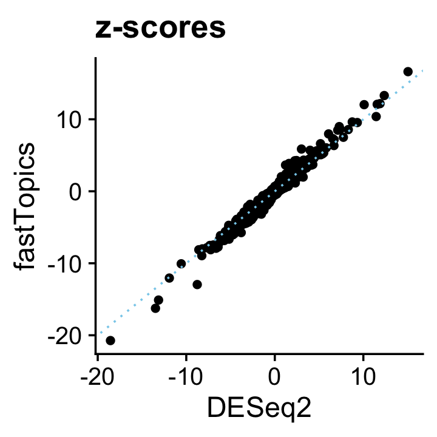
The p-value and LFSR distributions are also correspondingly similar in shape:
pdat <- data.frame(deseq2 = deseq$padj,
shrink = de$lfsr[,2],
de = factor(nonzero_lfc))
p1 <- ggplot(pdat,aes(x = deseq2,color = de,fill = de)) +
geom_histogram(bins = 64) +
scale_color_manual(values = c("darkorange","darkblue")) +
scale_fill_manual(values = c("darkorange","darkblue")) +
labs(x = "p-value",y = "genes",title = "DESeq2") +
theme_cowplot()
p2 <- ggplot(pdat,aes(x = shrink,color = de,fill = de)) +
geom_histogram(bins = 64) +
scale_color_manual(values = c("darkorange","darkblue")) +
scale_fill_manual(values = c("darkorange","darkblue")) +
labs(x = "lfsr",y = "genes",title = "fastTopics") +
theme_cowplot()
print(plot_grid(p1,p2))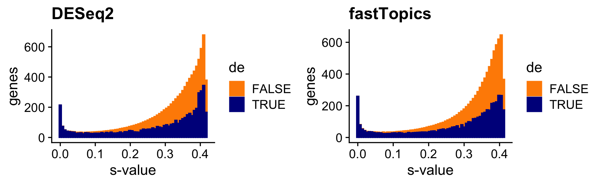
The MAST LFC estimates broadly resemble the fastTopics estimates, although the MAST estimates tend to be underestimates, and occasionally some estimates that are much more extreme (and probably would benefit from a shrinkage step, e.g., using adaptive shrinkage):
genes <- rownames(mast)
pdat <- data.frame(MAST = mast$avg_logFC,
fastTopics = de$postmean[genes,2])
ggplot(pdat,aes(x = MAST,y = fastTopics)) +
geom_point() +
geom_abline(intercept = 0,slope = 1,color = "skyblue",linetype = "dotted") +
ggtitle("LFC estimates") +
theme_cowplot()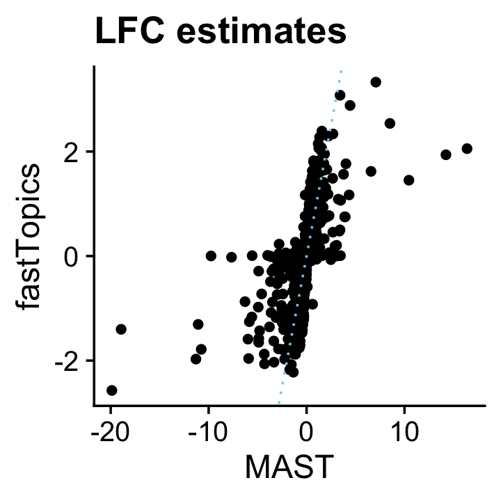
| Version | Author | Date |
|---|---|---|
| c0bc161 | Peter Carbonetto | 2021-11-10 |
The FindMarkers function in Seurat does not output z-scores, but we can compare p-values:
pdat <- data.frame(MAST = pmax(-10,log10(mast$p_val)),
fastTopics = pmax(-10,-de$lpval[genes,2]))
ggplot(pdat,aes(x = MAST,y = fastTopics)) +
geom_point() +
geom_abline(intercept = 0,slope = 1,color = "skyblue",linetype = "dotted") +
ggtitle("log10 p-values") +
theme_cowplot()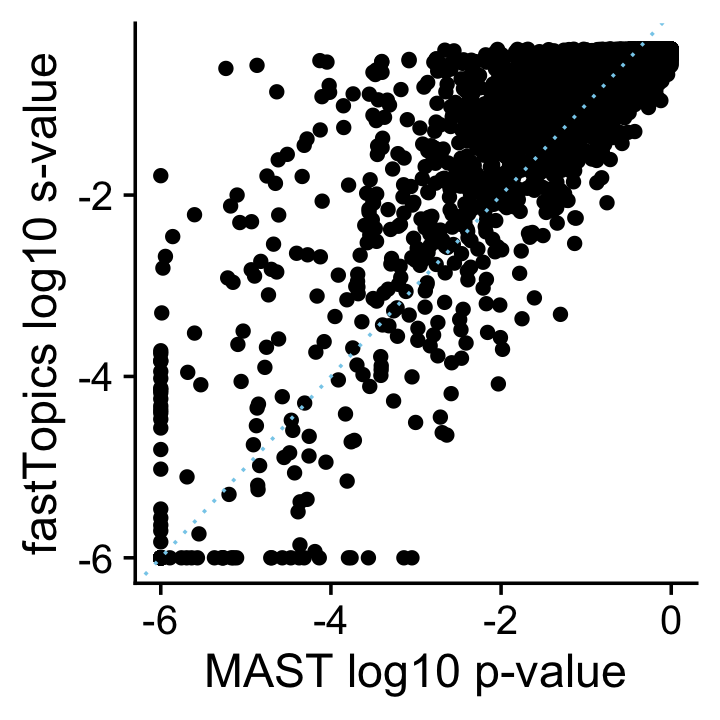
Again, the p-values are broadly similar. The effect of the fastTopics shrinkage step is apparent as many less significant p-values get driven toward 1.
Based on these results, we would expect that the performance of fastTopics and DESeq2 for discovering differentially expressed genes is very similar, with a slight advantage given to fastTopics (although consider it is using 1/3 more data):
mast_pval <- rep(1,10000)
names(mast_pval) <- colnames(X)
mast_pval[rownames(mast)] <- mast$p_val
pdat1 <- create_fdr_vs_power_curve(deseq$padj,nonzero_lfc,length.out = 200)
pdat2 <- create_fdr_vs_power_curve(de$lfsr[,2],nonzero_lfc,length.out = 200)
pdat3 <- create_fdr_vs_power_curve(mast_pval,nonzero_lfc,length.out = 200)
pdat <- rbind(cbind(pdat1,method = "DESeq2"),
cbind(pdat2,method = "fastTopics"),
cbind(pdat3,method = "MAST"))
ggplot(pdat,aes(x = fdr,y = power,color = method)) +
geom_line(size = 0.65,orientation = "y") +
scale_color_manual(values = c("darkblue","tomato","dodgerblue")) +
theme_cowplot()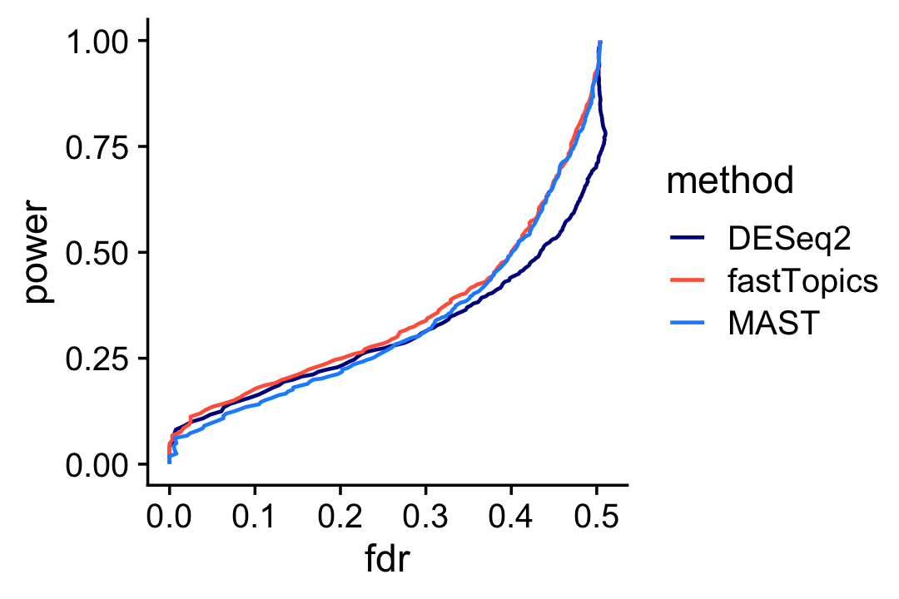
| Version | Author | Date |
|---|---|---|
| c0bc161 | Peter Carbonetto | 2021-11-10 |
Interestingly, MAST underperforms DESeq2 at lower FDRs, and overperforms DESeq2 at higher FDRs, whereas fastTopics performs at least as well as the other methods at any FDR.
And here is the ROC curve comparing DESeq2, MAST and fastTopics:
pdat1 <- create_roc_curve(deseq$padj,nonzero_lfc,length.out = 100)
pdat2 <- create_roc_curve(de$lfsr[,2],nonzero_lfc,length.out = 100)
pdat3 <- create_roc_curve(mast_pval,nonzero_lfc,length.out = 100)
pdat <- rbind(cbind(pdat1,method = "DESeq2"),
cbind(pdat2,method = "fastTopics"),
cbind(pdat3,method = "MAST"))
ggplot(pdat,aes(x = fpr,y = tpr,color = method)) +
geom_line(size = 0.65) +
geom_abline(intercept = 0,slope = 1,color = "black",linetype = "dotted") +
scale_color_manual(values = c("darkblue","tomato","dodgerblue")) +
theme_cowplot()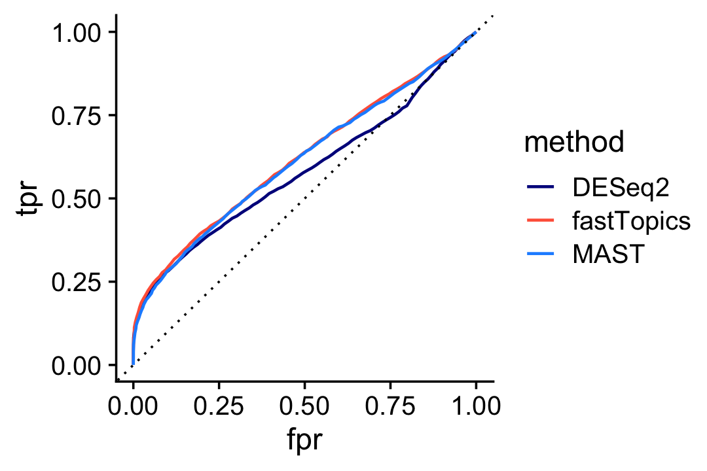
| Version | Author | Date |
|---|---|---|
| c0bc161 | Peter Carbonetto | 2021-11-10 |
sessionInfo()
# R version 3.6.2 (2019-12-12)
# Platform: x86_64-apple-darwin15.6.0 (64-bit)
# Running under: macOS Catalina 10.15.7
#
# Matrix products: default
# BLAS: /Library/Frameworks/R.framework/Versions/3.6/Resources/lib/libRblas.0.dylib
# LAPACK: /Library/Frameworks/R.framework/Versions/3.6/Resources/lib/libRlapack.dylib
#
# locale:
# [1] en_US.UTF-8/en_US.UTF-8/en_US.UTF-8/C/en_US.UTF-8/en_US.UTF-8
#
# attached base packages:
# [1] parallel stats4 stats graphics grDevices utils datasets
# [8] methods base
#
# other attached packages:
# [1] cowplot_1.0.0 ggplot2_3.3.5
# [3] fastTopics_0.6-74 MAST_1.12.0
# [5] Seurat_3.2.3 DESeq2_1.33.5
# [7] scran_1.14.6 SingleCellExperiment_1.8.0
# [9] SummarizedExperiment_1.16.1 DelayedArray_0.12.3
# [11] BiocParallel_1.18.1 matrixStats_0.61.0
# [13] Biobase_2.46.0 GenomicRanges_1.38.0
# [15] GenomeInfoDb_1.22.1 IRanges_2.20.2
# [17] S4Vectors_0.24.4 BiocGenerics_0.32.0
# [19] Matrix_1.2-18
#
# loaded via a namespace (and not attached):
# [1] utf8_1.1.4 reticulate_1.16 tidyselect_1.1.1
# [4] RSQLite_2.2.0 AnnotationDbi_1.48.0 htmlwidgets_1.5.1
# [7] grid_3.6.2 Rtsne_0.15 munsell_0.5.0
# [10] codetools_0.2-16 ica_1.0-2 statmod_1.4.34
# [13] future_1.18.0 miniUI_0.1.1.1 withr_2.4.2
# [16] colorspace_1.4-1 knitr_1.26 rstudioapi_0.13
# [19] ROCR_1.0-11 tensor_1.5 listenv_0.8.0
# [22] labeling_0.3 git2r_0.26.1 GenomeInfoDbData_1.2.2
# [25] mixsqp_0.3-46 polyclip_1.10-0 MCMCpack_1.4-5
# [28] farver_2.0.1 bit64_0.9-7 rprojroot_1.3-2
# [31] coda_0.19-3 vctrs_0.3.8 generics_0.0.2
# [34] xfun_0.11 R6_2.4.1 ggbeeswarm_0.6.0
# [37] rsvd_1.0.2 invgamma_1.1 locfit_1.5-9.4
# [40] bitops_1.0-6 spatstat.utils_1.17-0 assertthat_0.2.1
# [43] promises_1.1.0 scales_1.1.0 beeswarm_0.2.3
# [46] gtable_0.3.0 globals_0.13.0 goftest_1.2-2
# [49] mcmc_0.9-6 workflowr_1.6.2 rlang_0.4.11
# [52] MatrixModels_0.4-1 genefilter_1.68.0 splines_3.6.2
# [55] lazyeval_0.2.2 yaml_2.2.0 reshape2_1.4.3
# [58] abind_1.4-5 backports_1.1.5 httpuv_1.5.2
# [61] tools_3.6.2 ellipsis_0.3.2 RColorBrewer_1.1-2
# [64] ggridges_0.5.2 Rcpp_1.0.7 plyr_1.8.5
# [67] progress_1.2.2 zlibbioc_1.32.0 purrr_0.3.4
# [70] RCurl_1.98-1.2 prettyunits_1.1.1 rpart_4.1-15
# [73] deldir_0.1-29 pbapply_1.5-1 viridis_0.5.1
# [76] ashr_2.2-51 zoo_1.8-7 ggrepel_0.9.1
# [79] cluster_2.1.0 fs_1.3.1 magrittr_2.0.1
# [82] data.table_1.12.8 scattermore_0.7 SparseM_1.78
# [85] lmtest_0.9-38 RANN_2.6.1 truncnorm_1.0-8
# [88] SQUAREM_2017.10-1 whisker_0.4 fitdistrplus_1.1-1
# [91] hms_1.1.0 patchwork_1.0.1 mime_0.8
# [94] evaluate_0.14 xtable_1.8-4 XML_3.99-0.3
# [97] gridExtra_2.3 compiler_3.6.2 scater_1.14.6
# [100] tibble_3.1.3 KernSmooth_2.23-16 crayon_1.4.1
# [103] htmltools_0.4.0 mgcv_1.8-31 later_1.0.0
# [106] tidyr_1.1.3 geneplotter_1.64.0 RcppParallel_4.4.2
# [109] DBI_1.1.0 MASS_7.3-51.4 rappdirs_0.3.1
# [112] quadprog_1.5-8 igraph_1.2.5 pkgconfig_2.0.3
# [115] plotly_4.9.2 annotate_1.64.0 vipor_0.4.5
# [118] dqrng_0.2.1 XVector_0.26.0 stringr_1.4.0
# [121] digest_0.6.23 sctransform_0.3.2 RcppAnnoy_0.0.18
# [124] spatstat.data_1.4-3 rmarkdown_2.3 leiden_0.3.3
# [127] uwot_0.1.10 edgeR_3.28.1 DelayedMatrixStats_1.6.1
# [130] shiny_1.4.0 quantreg_5.54 lifecycle_1.0.0
# [133] nlme_3.1-142 jsonlite_1.7.2 BiocNeighbors_1.2.0
# [136] viridisLite_0.3.0 limma_3.42.2 fansi_0.4.0
# [139] pillar_1.6.2 lattice_0.20-38 fastmap_1.0.1
# [142] httr_1.4.2 survival_3.1-8 glue_1.4.2
# [145] spatstat_1.64-1 png_0.1-7 bit_1.1-15.2
# [148] stringi_1.4.3 blob_1.2.1 BiocSingular_1.2.2
# [151] memoise_1.1.0 dplyr_1.0.7 irlba_2.3.3
# [154] future.apply_1.6.0